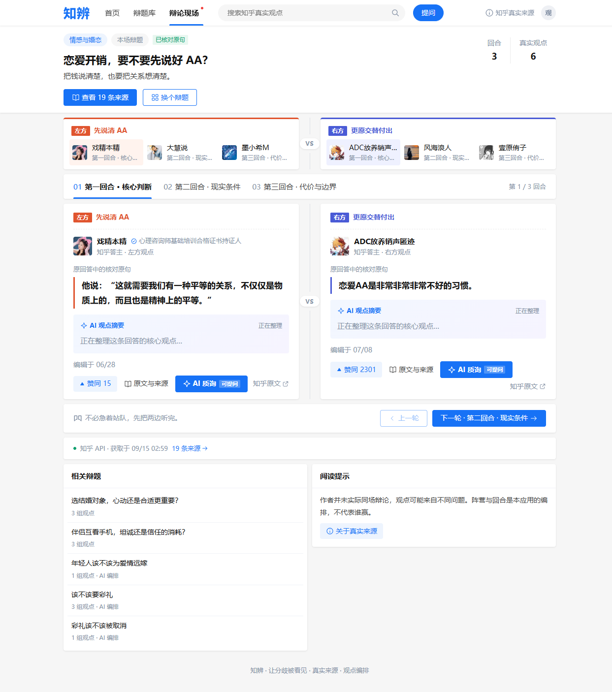
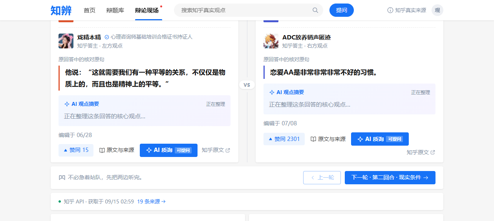
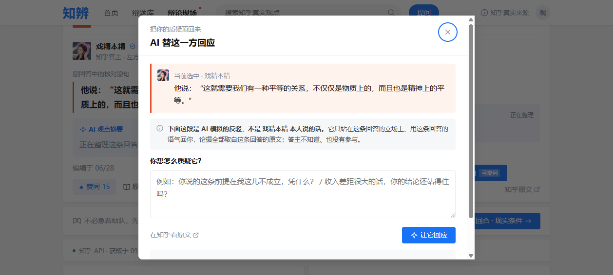
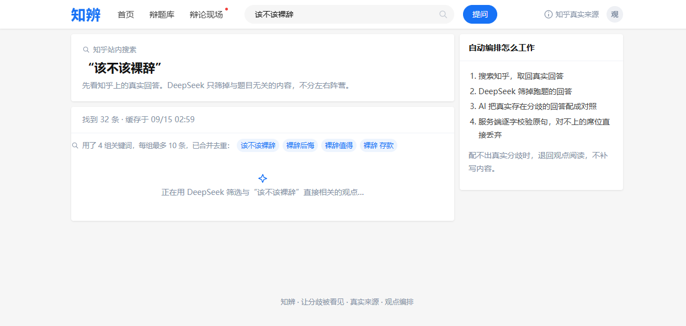
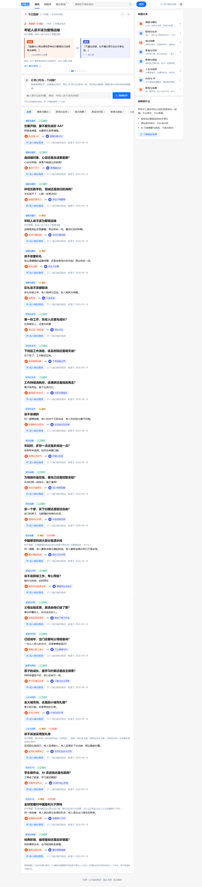
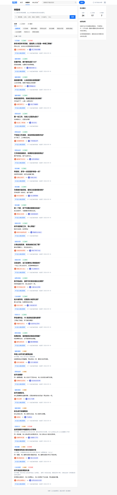

一个真正有争议的问题，在知乎上往往有几百条回答、吵了几百楼。但大多数用户的时间线里，只会看到算法推给他的那一种声音。
用户想认真了解「该不该裸辞」「AI 该不该进课堂」这类问题时，面临三个真实困境：
前三个是「准确」的问题，第四个是「愿意看」的问题，而后者往往被工具类产品忽略。可是「看两个人辩论」从来不需要坚持：《奇葩说》能让人熬夜追更，公开课却总在收藏夹吃灰。辩论是最古老的知识形式，也是最好看的那种——立场对撞有张力，攻防反转有悬念，金句交锋有爽感。
知辨把这一点做成产品的骨架：知识获取不该是苦役，它可以是娱乐。你为了「好看」点进来，走的时候顺便把两边的道理都听完了——而保证这场比赛好看的，正是戏剧性张力本身：极端情境下的对峙，与留给第三方的启发（见第二节）。
知辨围绕一个问题，把立场相反的真实回答摆到同一张辩论桌上：一边一句核对过的原句，逐字可溯源；AI 只在用户主动点击时介入，并且永远与作者原文严格分区。
三条支柱，同时也是产品三条不可退让的底线：
找不到立场对立的真实回答，就退回「观点阅读」模式，并如实告诉用户为什么。宁可少一个回合，绝不合成一个回合。
AI 摘要、AI 编排、AI 模拟反驳都有醒目标注；引句永远标着「原回答原句 · 已逐字校验」。用户任何时刻都能分辨哪句是人说的、哪句是 AI 说的。
知辨不告诉你谁对谁错，不显示胜负票数。它只保证一件事：你听到的每一句都是知乎原话，都能点回原文。
辩论这种形式自带戏剧张力——它把两拨人放进同一个极端情境里讨论：每个立场被推到聚光灯下，正面的道理与反面的道理短兵相接，任何含糊都无处可藏。
而知辨做的，是把这个张力从虚构拉回真实：舞台上对峙的两位，是真实存在、立场真的相反的知乎答主。极端情境是我们搭的舞台装置——作者本人并不知道、也没有参与，但说出的每一个字都是他们自己的原话。张力不靠编造，靠的是真实分歧本身。
以辩题「恋爱开销，要不要先说好 AA？」为例，用户看到的是一个三回合的辩论现场——每一句引言都是答主回答里的原句：



这是我们对「AI 模拟」的态度：模仿立场可以，冒充本人不行。弹窗里的这句声明不是法律免责，而是产品的诚实加分项。
知乎搜索一次最多返回 10 条结果——单一查询就像一个窄窗口，立场相反的回答经常被排在窗口之外。知辨把它做成了一个小型 Agent 管线，六步里有两步由模型自主决策、两步有确定性守卫：
生成的关键词按辩题落盘复用（行为可复现，不重复烧调用）；若某题已知回合不完整，本轮自动重掷一套关键词再试。用户在加载时能实时看到管线的每一步真实进度——「是真在搜，不是装忙」：

知辨没有发明自己的视觉语言——它直接长在知乎的设计基因上，从布局到配色全是知乎风：

| 模块 | 职责与要点 |
|---|---|
| 同源 Web 前端 原生 JS，无框架依赖 | 知乎风格信息流界面；轮播、筛选、弹层全部自研；AI 与人工编排用不同徽标严格区分 |
| Node 服务 scripts/serve.mjs | 静态服务 + API 路由；搜索 15min 缓存、60 次/小时限流（可配置）、跨站防护；只绑定本机 |
| 知乎官方 CLI 适配 | 搜索取数走官方 CLI；来源规范化清洗；凭据走系统凭据库，不进代码与浏览器 |
| 模型适配层 | OpenAI 兼容接口；四个能力：扩词、筛选、编排、质询；每个能力独立缓存与降级路径 |
| 校验层 arrange.mjs | 逐字定位（容忍空白差异）、一左一右、作者不同、同回答只用一次、必须给出共同问题、立场必须相反——任一不满足即丢弃该回合 |
| 运行数据 json-store.mjs | 题目健康度（真实渲染回合数）与关键词计划落盘；临时文件 + 原子重命名，防半截写入 |
测试体系用受控上游响应，不消耗真实搜索额度；覆盖观看流程、来源安全、自动编排校验、辩题库检索、页面交互与进度上报。退化题的巡检一条命令可复现（audit-curated.mjs）。
| 场景 | 今天的样子 | 知辨带来的价值 |
|---|---|---|
| 围观者 热点话题的深度消费者 | 热榜只给标题和情绪，评论区吵几百楼看不到全貌 | 十分钟听完两边最有代表性的道理，每句可溯源 |
| 犹豫者 正面临真实选择的人 | 搜「该不该裸辞」，看到的多是单边高赞故事 | 正反条件与依据并排呈现，帮你想清楚而不是替你决定 |
| 答主 认真写回答的创作者 | 认真写的少数派观点沉底，无人看见 | 被编排进辩论现场，获得与高赞同桌的曝光与回链 |
「炼金」是把矿石变成贵金属，而不是凭空造金子。知辨对知乎内容做的正是这件事：原料是真实回答（绝不虚构），冶炼是 AI 编排与多关键词检索（模型决策），成品是一场可溯源的对照阅读（结构化知识）。AI 在这里不是内容生产者，而是内容组织者——这正是「知识炼金场」赛道希望看到的 AI 与社区内容的关系。
自动编排成功的辩题自动沉淀进辩题库，可按关键词、来源、分类检索。AI 编排与人工核对用徽标严格区分——AI 的题绝不冒充人工查过的：

| 已完成并实测 | 计划中 |
|---|---|
| 17 道人工核对常驻辩题 + 热榜自动收录 | 移动端（≤600px）像素级验收 |
| Agent 式多关键词检索 + 关键词落盘复用 | 常驻题配置补存回答 URL（抗搜索排名漂移） |
| 独立 AI 复核 + 逐字校验 + 诚实降级 | 回答区「追问串」：允许对同一条回答连续质询 |
| 实时进度上报（加载时可见 AI 每一步） | 生成关键词质量系统性回归 |
| 85 项自动化测试全通过 | 面向评委的在线演示环境评估 |